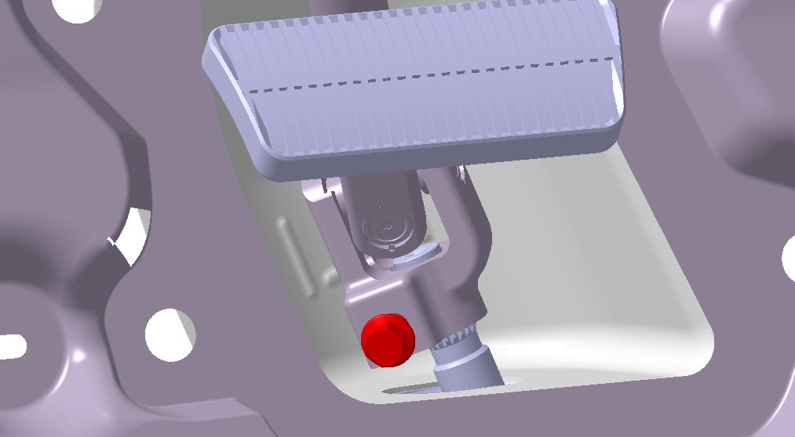
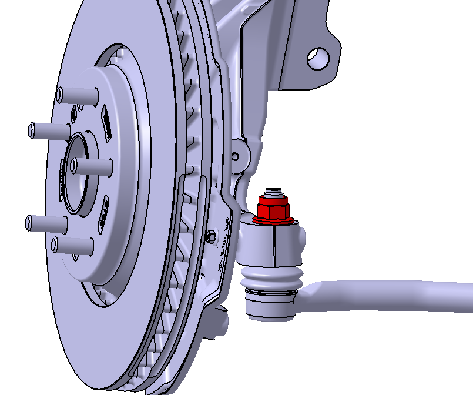
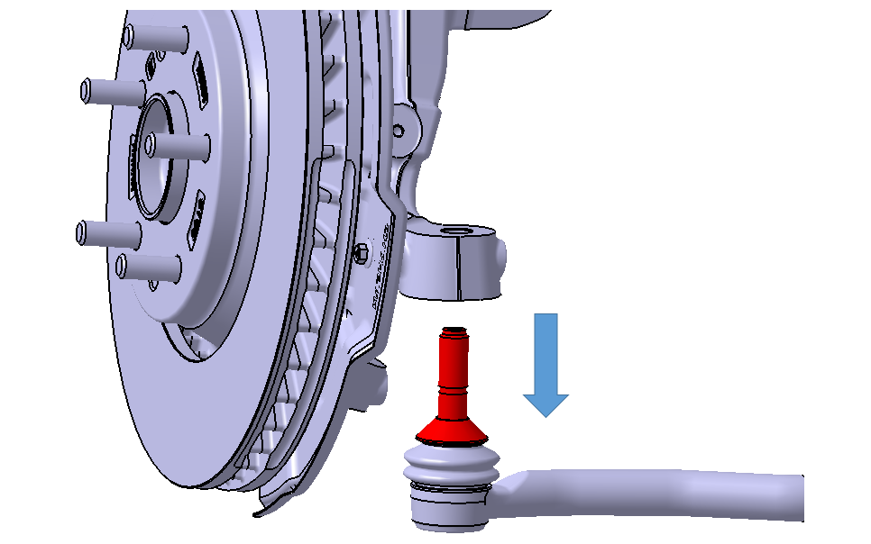
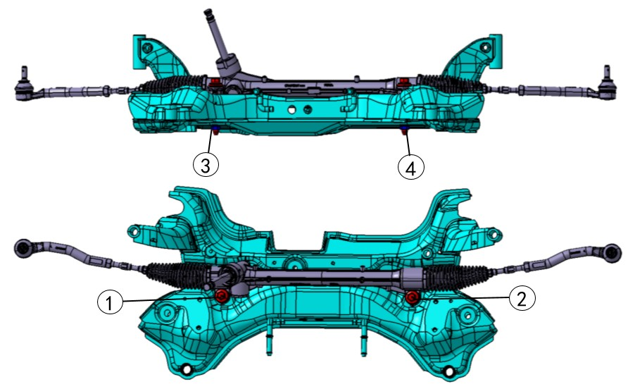
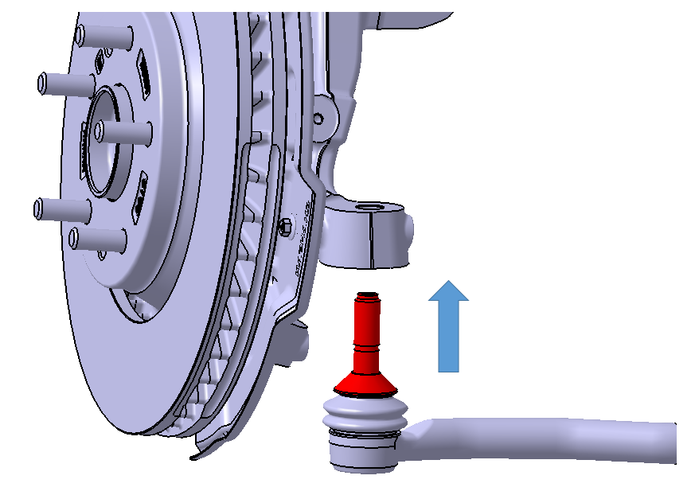
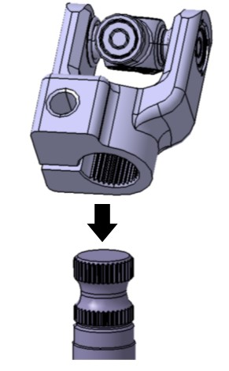

Механический рулевой механизм в сборе
Снятие
-
Установить передние колеса автомобиля прямо, выключить Питание автомобиля, сдвинуть сиденье водителя назад, с помощью торцевой головки на 11 mm выкрутить болт, соединяющий нижний рулевой вал с валом шестерни рулевого механизма (болт показан красным на рисунке ниже); этот болт обработан фиксатором резьбы и после снятия повторному использованию не подлежит.

-
Поднять и зафиксировать автомобиль на опоры, снять левое и правое передние колеса, см. Колеса и шины
-
С помощью торцевой головки на 21 mm открутить стопорную гайку с неметаллическими вставками и шестигранным фланцем (гайка показана красным на рисунке ниже)

-
Извлечь пальцы шаровых шарниров левой и правой внешних тяг из монтажных отверстий поворотного кулака в направлении стрелки, показанной на рисунке ниже; пальцы шаровых шарниров выделены красным на рисунке ниже.

Внимание
При демонтаже не повредить пыльник шарового шарнира узла внешней тяги. В случае повреждения заменить узел внешней тяги.
-
Снять Передний подрамник в сборе.
-
С помощью рожкового или накидного ключа на 19 mm зафиксировать гайки ③ и ④, затем с помощью торцевой головки на 19 mm выкрутить 2 болта крепления рулевого механизма к подрамнику (① и ②, как показано на рисунке ниже), после чего завершить Снятие Механический рулевой механизм в сборе.

Установка
-
用19mm板手或活动板手固定③、④螺母，再用19mm套筒将转向器与副车架连接的2颗螺栓（如下图所示①、②）安装，按如下图所示①②顺序依次安装，安装扭力130±13N·m，至此完成转向器总成安装

-
Поднять Передний подрамник в сборе (с Механический рулевой механизм в сборе) на подходящую высоту для удобства вставки пальца шаровой опоры внешней рулевой тяги в поворотный кулак;
-
Вставить пальцы шаровых шарниров левой и правой внешних тяг в монтажные отверстия поворотного кулака в направлении стрелки, показанной на рисунке ниже; пальцы шаровых шарниров выделены красным на рисунке ниже.

-
Извлечь пальцы шаровых шарниров левой и правой внешних тяг из монтажных отверстий поворотного кулака в направлении стрелки, показанной на рисунке ниже; пальцы шаровых шарниров выделены красным на рисунке ниже.
-
Снять Передний подрамник в сборе.
-
Соединить вал шестерни рулевого механизма с нижним валом рулевой колонки, совместить шлицы вилки со шлицами вала шестерни и вставить, затем затянуть новым крепежным болтом, момент затяжки составляет 56 ± 3 N·m
